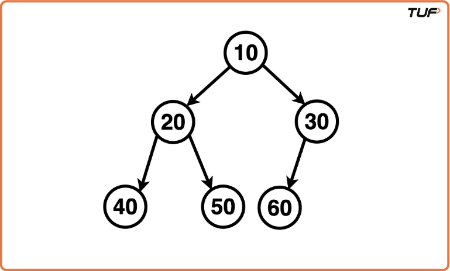
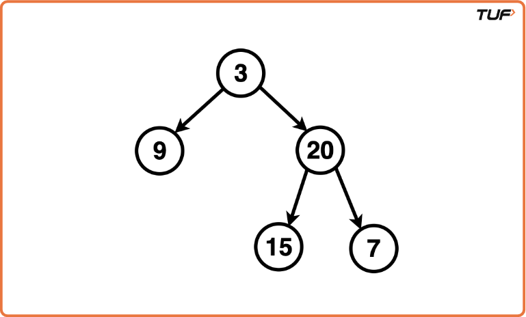

Construct Binary Tree from Inorder and PostOrder Traversal
Problem Statement: Given the Postorder and Inorder traversal of a Binary Tree, construct the Unique Binary Tree represented by them.
Examples
Example : Input: Inorder: [ 40, 20 , 50, 10, 60, 30], Postorder: [40, 50, 20, 60, 30, 10]
Explanation: The unique Binary Tree hence created has inorder traversal: [40, 20, 50, 10, 60, 30] and postorder traversal: [40, 50, 20, 60, 30, 10]. Example : Input: Inorder: [9, 3, 15, 20, 7], Postorder: [9, 15, 7, 20, 3]
Explanation: The unique Binary Tree hence created has inorder traversal: [9, 3, 15, 20, 7] and postorder traversal: [9, 15, 7, 20, 3].
Disclaimer: Here is the practice link to help you assess your knowledge better. It's highly recommend trying to solve it before looking at the solution.
Approach
Algorithm
Intuition: Building a binary tree from inorder and postorder traversals follows a recursive strategy similar to the preorder-inorder version. However, instead of taking the root from the start (as in preorder), we take it from the end of the postorder array. This root splits the inorder array into left and right subtrees. Using index boundaries avoids repeated slicing, and a hashmap is used for O(1) root lookups in the inorder traversal.
Approach:
- Create a hashmap to store the indices of elements in the inorder array for fast lookup.
- Define a recursive function
buildTreewith parameters for current ranges in inorder and postorder arrays. - Base case: If
postStart > postEndorinStart > inEnd, returnnull. - The current root is
postorder[postEnd]. Find its index in inorder using the map. - Calculate
leftSubtreeSizeasrootIndex - inStart. - Recursively build left subtree with adjusted
inStart to rootIndex-1andpostStart to postStart + leftSubtreeSize - 1. - Recursively build right subtree with
inIndex+1 to inEndandpostStart + leftSubtreeSize to postEnd - 1. - Return the root node constructed from the above steps.
Code
#include <bits/stdc++.h>
using namespace std;
// TreeNode structure
struct TreeNode {
int val;
TreeNode *left, *right;
TreeNode(int x) : val(x), left(nullptr), right(nullptr) {}
};
class Solution {
public:
TreeNode* buildTree(vector<int>& inorder, vector<int>& postorder) {
if (inorder.size() != postorder.size()) return nullptr;
// Map each value in inorder to its index
map<int, int> hm;
for (int i = 0; i < inorder.size(); i++) {
hm[inorder[i]] = i;
}
// Call recursive builder
return build(inorder, 0, inorder.size() - 1,
postorder, 0, postorder.size() - 1, hm);
}
private:
TreeNode* build(vector<int>& inorder, int is, int ie,
vector<int>& postorder, int ps, int pe, map<int, int>& hm) {
if (ps > pe || is > ie) return nullptr;
// Last element in postorder is root
TreeNode* root = new TreeNode(postorder[pe]);
// Find root index in inorder
int inRoot = hm[postorder[pe]];
int numsLeft = inRoot - is;
// Recursively build left and right subtrees
root->left = build(inorder, is, inRoot - 1,
postorder, ps, ps + numsLeft - 1, hm);
root->right = build(inorder, inRoot + 1, ie,
postorder, ps + numsLeft, pe - 1, hm);
return root;
}
};
// Inorder printer
void printInorder(TreeNode* root) {
if (!root) return;
printInorder(root->left);
cout << root->val << " ";
printInorder(root->right);
}
// Driver
int main() {
vector<int> inorder = {40, 20, 50, 10, 60, 30};
vector<int> postorder = {40, 50, 20, 60, 30, 10};
cout << "Inorder Vector: ";
for (int x : inorder) cout << x << " ";
cout << "\nPostorder Vector: ";
for (int x : postorder) cout << x << " ";
cout << endl;
Solution sol;
TreeNode* root = sol.buildTree(inorder, postorder);
cout << "Inorder of Unique Binary Tree Created:\n";
printInorder(root);
cout << endl;
return 0;
}
Complexity Analysis
Time Complexity: O(N), Every node is visited once.
Space Complexity: O(N), Due to hashmap and recursion stack (up to tree height).